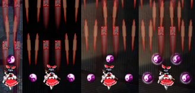
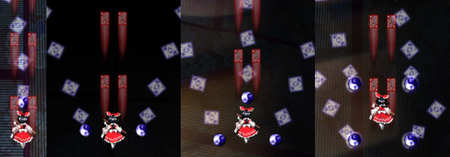
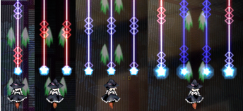
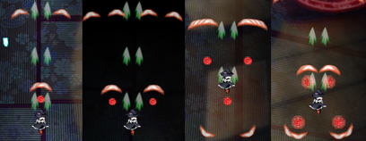
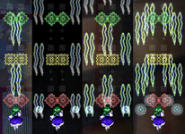
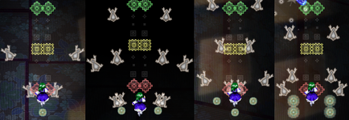

- Welcome to Touhou Wiki!
- Please register to edit. For assistance, check in with our Discord server or IRC channel.
Undefined Fantastic Object/Gameplay
Gameplay[edit]
Controls[edit]
The game may be played using either a keyboard or a gamepad.
Keyboard controls are as follows:
- The Arrow Keys move the character around
- Z causes a short barrage of shots to be fired; it may be held down for rapid fire
- X releases a bomb, also known as a Spell Card or spiritual attack (presuming you have bombs left)
- Shift slows the character's movement, and changes the nature of the character's shot; it generally makes your attacks more focused. Holding Shift will also increase the size of the character's item collection box. This makes it possible to snag items that are just out of reach or more effectively collect raining items.
- Esc pauses the game and brings you to the in-game menu
- Ctrl fast-forwards through any dialogue and replays
- Home or P produces a .bmp screenshot in the /snapshot directory. (Only works in 32-bit color mode.)
Basic Gameplay[edit]
Undefined Fantastic Object plays like a fairly typical vertically-scrolling danmaku shooting game, in which the player's character is always facing towards the top of the screen, shooting at anything that moves, avoiding and weaving between enemy bullets, and confronting difficult bosses at the end of a stage.
There are 4 levels of difficulty: Easy, Normal, Hard, and Lunatic. Each difficulty level features differences in the number of bullets fired by each enemy, rate of fire, variations in the bullets' pattern of movement, and the number and type of enemy Spell Cards used.
Shot[edit]
A character's "shot" is the player's primary method of attacking enemies. The shot's attack area and behavior varies depending on the character and attack type the player has chosen.
Point of Collection[edit]
Like previous Touhou games, there is a line most of the way up the screen called the point of collection. If you move your character at or above this line, all items on the screen will be drawn to your character. As with Mountain of Faith onward, you don't need to have full power or focus to use the POC - it's always available.
Bomb[edit]
Undefined Fantastic Object re-introduces bombs with distinctive visual styles that differ between characters, and even between shot types for the same character. A character's "bomb" is the player's limited-use method of getting out of difficult situations. A bomb's attack area, duration, and power varies depending on the character type and attack type the player has chosen, but it typically deals heavy damage to every enemy it touches, in addition to canceling out any bullets in the bomb's way. The player's character becomes invincible during and for a short time after the bomb's effect wears off.
At the beginning of the game, you will start off with 2 bombs. You can increase your bomb stock by collecting three bomb parts or one bomb item. Green UFOs drop a bomb part when defeated and a full bomb when their score multiplier is full; the Extra boss also drops a bomb part after each of her fifth through eighth spellcards.
You can carry up to a maximum of 9 bombs at a time, although the game only displays the first 8. If you receive a bomb when you already have the maximum, that bomb will be lost. Unlike previous games, if the player loses a life the bomb counter only resets to default value of 2 if the player has less than 2 bombs — which means the player can always utilize all their accumulated bombs. In addition, accumulated bomb parts are preserved when the player loses a life, whether the player had less than 2 bombs or not.
Also, unlike every Windows game up to Subterranean Animism, bombing does not auto-collect every item on screen.
As usual, deathbombing is here. After being hit by a bullet, the player is given a very brief window of time to bomb and negate their death. The "death" sound effect will play, and the bomb will then activate.
Lives[edit]
You start off the game with 2 lives. You can lose a life by getting "hit" by an enemy attack.
The hit box for your character is quite small in comparison to your on-screen sprite, approximately only 5 pixels by 5 pixels in size. If you hold Shift, a colored dot will appear, showing the hitbox precisely. If the hit box of your character's sprite comes into contact with the hit box of an enemy bullet, laser, or the enemy itself, then you have been hit.
In Undefined Fantastic Object, the player's life stock is represented by stars. You can gain a life by collecting four life parts or one 1up item. Red UFOs drop one life part when their score multiplier is full and another life part when defeated; the bosses of stages 1-5 and the midbosses of stages 1, 2, 3, and 5 also drop a life part when defeated, and the Extra boss drops a life part after her first four spellcards.
You can carry up to a maximum of 9 extra lives at a time; the game only displays 8, but you can continue to accumulate life parts toward a hidden 9th life. If you collect a life part when you already have 9 extra lives, that part will be lost. If you collect a 1up item when you already have at least 7 extra lives, your life count will be set to 8, even if you had more than 8 lives at the time.
When you lose a life, you also lose 1.00 Power points (0.07 are scattered for you to collect); however, your power cannot decrease below 1.00. Also, all the bullets on the screen are cleared, and you become invulnerable for a short period of time.
Stages[edit]
There are 6 stages and an extra stage in the full version of the game:
- Stage 1:「春の湊に船の影」 A Ship's Shadow at the Dawn of Spring
- Stage 2:「雲に潜む一つ目の化生」 A Ghostly Life Lurking in the Clouds
- Stage 3:「高速の廃墟と巨人」 The Giant and the High-Speed Ruins
- Stage 4:「聖輦と不吉な船長」 The Unfortunate Captain of the Holy Palanquin
- Stage 5:「魔界の赤黒い封印」 The Red and Black Seal of the Underworld
- Stage 6:「八苦を滅した尼公」 The Nun Who Overcame the Eight Sufferings
Extra stage:「未確認飛行幻想物体」 Unidentified Fantastic Flying Object
Boss Battles[edit]
The main challenge and the main attraction. Each boss has multiple lives, which are represented by stars shown at the upper left of the screen. Bosses usually alternate between attacking normally and attacking with Spell Cards, switching once with each health bar. Colored sections on the health bar indicate the start of a Spell Card attack when the boss' health is depleted that far.
Normal attacks are typically incrementally stronger versions of the boss character's basic attack. Spell Card attacks bedazzle the player with combinations of complex patterns that often involve the use of projectiles and obstacles crafted especially for use with that Spell Card. If the player manages to defeat a Spell Card attack without getting hit or using any bombs, a substantial score bonus is rewarded for the feat.
Each attack is accompanied by a timer. When time runs out, the boss will switch to their next attack pattern even if their health bar isn't empty. Waiting for a boss character's attack pattern to self-destruct may be enough to beat them, but mere survival won't earn the player any score bonuses. (Note: There are some boss attacks with a spell card bonus that does not decrease. For those bosses, you WILL get a score bonus if you survive the countdown to zero without dying or bombing; this includes Nue's final card even though she's not invulnerable during it.)
When fighting a boss, a position marker shows up on the bottom margin of the screen, indicating where the boss is on the horizontal axis. Since your target can be completely obscured by bullets or darkness at times, use this marker to help you aim your shots. The marker will dim when the boss is being hit, and will flash red when her health bar gets sufficiently depleted.
Characters[edit]
| Reimu A A narrow stream of needles.  |
Reimu B Homing amulets.  |
| Marisa A Lasers.  |
Marisa B Shots that will even shoot behind you at higher power levels.  |
| Sanae A Snakes that veer to hit enemies on the same horizontal line.  |
Sanae B Frogs that spread out with a wide scope.  |
Screen Layout[edit]
- Your character
- Player Score
- High Score: your highest score for the current character, type, and difficulty
- Score: your current score
- The number of remaining lives and bombs / The approximate location of the point of collection
- Player Status
- Power: your shot power level, maxing out at 4.00
- Point value: the current value of point items
- Graze: the number of enemy shots that have grazed your hitbox during the game
- Enemy Status
- Left bar(s): the number of health bars the enemy has left. White bars indicate the boss will use regular attacks, red bars indicate the boss will use a spell card.
- Right number: the amount of time left before the enemy's attack spell fails (self-destructs)
- UFO counter
- Spell Card Status
- Title: the name of the Spell Card being used
- Bonus: the constantly-updating value of the Spell Card Bonus
- History: the number of times you have "collected" the Spell Card currently being used, and the number of times you have faced it.
Unlockable Features[edit]
- Extra Stage
- Level Practice (not available in demo)
Bugs[edit]
- In the demo, it was possible to have Reimu B's orbs linger by bombing just before the stage ends, on the boss's last spellcard. Also, it was possible for Sanae B to inflict bomb damage on a spellcard by bombing on the non-SC before it. Both have been fixed in the final.
- There was a glitch that caused the game to crash when the score counter reached one billion points, be it while playing the game or while watching a replay. This has been fixed as of the v1.00b patch.
- By skipping through the dialogue at the end of a boss fight it is possible to end the stage before the items and star piece are collected by the player.
- If a player's score exceeds 2147483648 (231) points, the displayed score overflows and becomes its value minus 4294967296 (232), with an "x" replacing the negative sign; the commas are also removed. The player's actual score is unaffected and is displayed normally on the high score and replay screens.
- ReimuB's bomb, Fantasy Seal, can cause a very slight amount of damage to Nue during a spellcard at the end of her invincibility frames. This is most likely due to the splash damage of Fantasy Seal extending beyond those frames.
Scoring[edit]
Enemies[edit]
Any damage you deal to any enemy, whether it be caused by your shots or your bombs, will cause your score to increase very slightly. Actually destroying enemies will award you slightly more points, but the points earned from this are around the range of hundreds to thousands of points per enemy. This is not a significant amount at all. However, destroyed enemies release items for you to collect, and those are very important for scoring as covered below.
Point Items[edit]
As its name implies, point items are the major source of points in the game. The higher up on the screen you collect them, the more points they are worth, up to a defined maximum. You can easily tell when you are collecting point items for their maximum value, since they show the value in yellow text. The auto-item-collect line is the same height as the height where point items reach their maximum value, so take advantage of this fact wherever you can for massive points. Unlike in the previous games, autocollected items are still worth their full value if you happen to leave the autocollect area before items contact your hitbox, or if they're autocollected in another manner such as after defeating a boss.
The point items' starting value depends on the chosen difficulty:
| Difficulty | Start value | Maximum value |
|---|---|---|
| Easy | 5,000 | 100,000 |
| Normal | 10,000 | 200,000 |
| Hard | 15,000 | 300,000 |
| Lunatic | 20,000 | 400,000 |
| Extra | 20,000 | 500,000 |
The point item value is increased by 1,000 points for each small UFO collected while there is a summoned UFO on the screen, plus:
(number of enemy bullets canceled / 10) + (graze counter)
This is rounded down to the nearest 10. Enemy bullets canceled can come from summoning a UFO, a UFO explosion, finishing a boss attack, or using a bomb. When the point item value reaches the maximum value, it cannot increase further.
Power Items[edit]
Power items increase your power gauge by 0.01. Power items collected at full power will give you 10 points (displayed as 100 in-game, but the score increases by only 10 per power item).
UFOs[edit]
Some enemies will have small green UFOs circling above them, they drop a small UFO after you destroy them, some stage mid-bosses will drop 2 small UFOs after you defeat their final attack. The small UFO will fly around the screen. They come in red, blue and green colors. There are two types, blinking and non-blinking. The blinking UFO will change colors every few seconds, however, keeping your character's sprite in close proximity to the UFO will prevent it from changing colors. The other type of UFO will stay a single color. It should be noted that these non-blinking UFOs are not random, so their positions in the levels can be memorized to further advantages.
Collecting three UFO items causes a large UFO enemy to appear on the screen. Three of a specific color of UFO will summon a big UFO of that color, while collecting one of each will summon a flashing big UFO. If you have picked up two UFO items of the same color and then pick up an item of a different color, the first item in line will be replaced by the color of the item you've picked up last. If you have two UFOs, a UFO of the color that will result in summoning a large UFO will be surrounded by a flashing pentagon so you will know what type to collect without having to look at the bottom-left corner. Each summoned UFO has a life bar and timer for how long you have to defeat it. At about two seconds left on the timer, the UFO will start ascending to leave the screen; it is important to defeat it before it leaves, otherwise all the items it has sucked in will be lost. If the UFO is on the screen at same time with a boss, it will fly away even if there is time left; however, in the case of mid-bosses, the UFO will stop flying away if the boss is defeated in time. In-game dialog will make summoned UFOs explode.
All UFOs suck in the point and power items on the screen. A circle around the UFO shows the score multiplier for the UFO. The multiplier increases for every item the UFO sucks in to a maximum of 100%. The number of items required for a maximum multiplier starts at 34 for stage one and increases as the player progresses through the stages (36, 39, 42, 46, 51). Extra stage UFOs require at least 56 items for a maximum multiplier.
The maximum multipliers for the UFOs are:
- 1 for Red UFOs
- 2 for Green UFOs
- 6 for Blue UFOs when not at full power
- 8 for Blue UFOs when at full power
- 3 for Flashing UFOs when not at full power
- 4 for Flashing UFOs when at full power
Blue UFOs are potentially best for increasing score. When defeated, they drop a small UFO and give you points.
Red UFOs are for life parts. When its multiplier circle is full, a red UFO drops a life part, and when defeated, it drops a small UFO, a life part, and several power items. When defeated, the score bonus counts power items as point items, and if defeated while at full power, power items are worth 2 point items each.
Green UFOs are for bomb parts. When its multiplier circle is full, a Green UFO drops a full bomb, and when defeated, it drops a small UFO and a bomb part.
Flashing UFOs change the items they suck in; power items will become point items and point items will be power items. This has strategic use in certain stages where a lot of power item drops are concentrated within a short time span. When the multiplier circle is full, a flashing UFO drops a small flashing UFO that starts at the same color as the third small UFO in your UFO gauge. When defeated, it drops another small UFO of the same color.
If an small UFO is picked while a big UFO is on the screen, the small UFO will be lost but it'll increase the point item value by 1000, being the only way other than grazing to increase it.
When defeated, a UFO provides a score bonus based on how far the score multiplier is filled.
(Point items in UFO * Point item Value at UFO destruction * multiplier)
UFOs also clear parts of the screen when defeated, in a bomb-like fashion. The power of the explosion is based on how full the multiplier circle is.
Spell Card Bonus[edit]
Occasionally, a boss will attack using a Spell Card. You will know this is happening when the background changes and the Spell Card's name appears in the upper right corner of the screen. If the boss's health bar is depleted within the time limit and without getting hit or using a bomb, the Spell Card bonus will be added to your score.
The bonus starts at out at a value equal to:
2 million * (stage number + difficulty value)
with difficulty value being:
| Easy | 0 |
| Normal | 1 |
| Hard | 2 |
| Lunatic | 3 |
Bonuses in Extra have a starting value of 22,000,000.
Except for Minamitsu Murasa's last Spell Card on Normal, Hard, and Lunatic, and Nue Houjuu's last two Spell Cards, the bonus decreases over time, starting 5 seconds after the spell card starts. The bonus decreases at a constant rate of:
0.75*(starting value)/(time limit in seconds - 5) per second
Clear Bonus[edit]
At the end of a stage, the player is awarded a clear bonus.
(stage * 1 million)
At the end of the game, the bonus is calculated as following, using the first two digits of your power:
Easy: (lives in stock * 0.5 million) + (bombs in stock * 0.25 milion) +
(power * 1 million) + (base point item value * 100) + 6 million points.
Normal: (lives in stock * 1 million) + (bombs in stock * 0.5 million) +
(power * 1 million) + (base point item value * 100) + 6 million points.
Hard: (lives in stock * 2 million) + (bombs in stock * 1 million) +
(power * 1 million) + (base point item value * 100) + 6 million points.
Lunatic: (lives in stock * 3 million) + (bombs in stock * 1.5 million) +
(power * 1 million) + (base point item value * 100) + 6 million points.
Extra: (lives in stock * 3 million) + (bombs in stock * 1.5 million) +
(power * 1 million) + (base point item value * 100) + 7 million points.